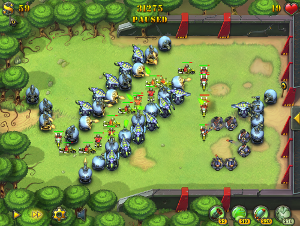
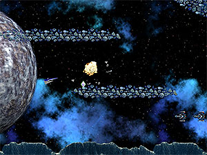
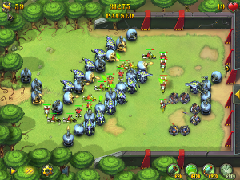
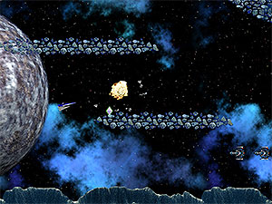

Games
A brief study of browser games
Why HTML5?
Rough Timeline of
Web Technologies
| 1994 | HTML2 |
| 1996 | CSS1 + javascript |
| 1997 | HTML4 |
| 1998 | CSS2 |
| 2000 | XHTML1 |
| 2002 | Tableless Web Design |
| 2005 | AJAX |
| 2009 | HTML5 |
What is new in HTML5?
- The main competitors in web multimedia management are Flex by Flash and Silverlight by Microsoft.
They require user to download a browser plugin - HTML5 is simply a markup language with an extended layer of tags and attributes to handle rich media content
- Produces animations and visual effects using JavaScripts and Scalable Vector Graphics
What is new in HTML5?
- Real time communication is enabled using websockets
- Compatibility with different platforms using Canvas
- Also includes offline local storage and Geo Location
- Video and audio elements are easy to handle without third party plugins
Canvas
- Allows easy manipulation of pixels without external plugins
- Auto resize example using simple canvas element:
function resizeGame() { var gameArea = document.getElementById('gameArea'); var newWidth = window.innerWidth; var newHeight = window.innerHeight; gameArea.style.height = newHeight + 'px'; gameArea.style.width = newWidth + 'px'; var gameCanvas = document.getElementById('gameCanvas'); gameCanvas.width = newWidth; gameCanvas.height = newHeight; } - With the aid of JS, canvas 3D can make stunning visual effects
Web Sockets
Google's Ian Hickson—the HTML5 specification lead says:
Reducing kilobytes of data to 2 bytes…and reducing latency from 150ms to 50ms is far more than marginal. In fact, these two factors alone are enough to make Web Sockets seriously interesting to Google.
Polling vs Web Sockets
- With polling, the browser sends HTTP requests at regular intervals and immediately receives a response.
- HTTP request and response headers contain unnecessary header information introducing latency
- Also two connections are opened to create a full-duplex communication over half-duplex HTTP
- Web Sockets define a full-duplex communication channel that operates through a single socket over the Web.
Web Socket Handshake
- Client and server upgrade from HTTP protocol during their initial handshake
- Both text and binary data can be sent on full-duplex after upgrade as data strings in JavaScript
- Data is framed minimally with just 2 bytes
- Text frames use a terminator and binary frames use length prefix
| Browser Request | Server Response |
|---|---|
|
|
Case Study
Comet vs WebSockets
- Web application which request real-time stock data from RabbitMQ message broker was created.
- Comet uses half-duplex polling to get updates

- Using LiveHTTP Headers (a Firefox add-on to show header traffic), the total overhead of request and response headers was observed to be 871 bytes!
Writing web sockets is simple !!!
Simply establish connection and use open, error, message and close events as necessary
var socket = new WebSocket('ws://localhost:8080/');
socket.onopen = function () {
alert('Connected!');
};
socket.onmessage = function (event) {
alert('Received data: ' + event.data);
socket.close();
};
socket.onclose = function () {
alert('Lost connection!');
};
socket.send('hello, world!');
Other Features
- Audio and Video : the tracks are loaded the same way all the other game effects are loaded with XMLHttpRequests and the arraybuffer response type and stored in buffers. They are played using
<audio>and<video>HTML5 tags. - Local Storage : HTML5 allows to store normalized relational database which can be explored using SQL
Games using HTML5

 



Our Game
Browser Compatibility
Conclusions
- HTML5 is still considered as work-in-progress and has features which are not compatible with all the browsers.
- HTML5 does not differentiate between mobile/PC platforms and avoids plugin installations
- Hence, HTML5 will soon emerge as a new standard for rich media applications over the internet
References
- Impact of HTML5 as a Standard, Upul Senanayake,Faculty of Engineering, University of Peradeniya
- A resource for open web HTML5 developers,http://www.html5rocks.com
- http://www.websocket.org/
- http://www.sitepoint.com/5-awesome-html5-games/
- http://ajf.me/websocket/#demo